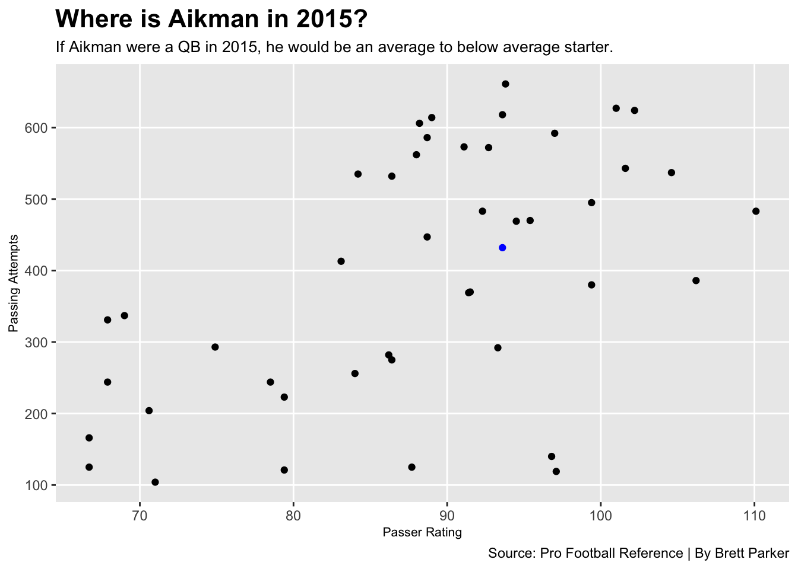

Troy Aikman is considered one of the all-time greats in the sport of American football. With three Super Bowl victories in the ’90s, Aikman showed the world how great he was. But was he really THAT great?
Let’s look at the stats.
Using data found from Sports Reference pro football site, we can look deeper into the numbers and beyond the Super Bowl wins.
New names:
Rows: 99 Columns: 30
── Column specification
──────────────────────────────────────────────────────── Delimiter: "," chr
(5): Player, Tm, Pos, QBrec, Player-additional dbl (25): Rk, Age, G, GS, Cmp,
Att, Cmp%, Yds...12, TD, TD%, Int, Int%, Lng,...
ℹ Use `spec()` to retrieve the full column specification for this data. ℹ
Specify the column types or set `show_col_types = FALSE` to quiet this message.
• `Yds` -> `Yds...12`
• `Yds` -> `Yds...24`
Code
eightfive <-read_csv("1985.csv")
New names:
Rows: 109 Columns: 30
── Column specification
──────────────────────────────────────────────────────── Delimiter: "," chr
(5): Player, Tm, Pos, QBrec, Player-additional dbl (25): Rk, Age, G, GS, Cmp,
Att, Cmp%, Yds...12, TD, TD%, Int, Int%, Lng,...
ℹ Use `spec()` to retrieve the full column specification for this data. ℹ
Specify the column types or set `show_col_types = FALSE` to quiet this message.
• `Yds` -> `Yds...12`
• `Yds` -> `Yds...24`
Code
ninefive <-read_csv("1995.csv")
New names:
Rows: 103 Columns: 31
── Column specification
──────────────────────────────────────────────────────── Delimiter: "," chr
(5): Player, Tm, Pos, QBrec, Player-additional dbl (26): Rk, Age, G, GS, Cmp,
Att, Cmp%, Yds...12, TD, TD%, Int, Int%, 1D, ...
ℹ Use `spec()` to retrieve the full column specification for this data. ℹ
Specify the column types or set `show_col_types = FALSE` to quiet this message.
• `Yds` -> `Yds...12`
• `Yds` -> `Yds...25`
Code
zerofive <-read_csv("2005.csv")
New names:
Rows: 98 Columns: 31
── Column specification
──────────────────────────────────────────────────────── Delimiter: "," chr
(5): Player, Tm, Pos, QBrec, Player-additional dbl (26): Rk, Age, G, GS, Cmp,
Att, Cmp%, Yds...12, TD, TD%, Int, Int%, 1D, ...
ℹ Use `spec()` to retrieve the full column specification for this data. ℹ
Specify the column types or set `show_col_types = FALSE` to quiet this message.
• `Yds` -> `Yds...12`
• `Yds` -> `Yds...25`
Code
onefive <-read_csv("2015.csv")
New names:
Rows: 86 Columns: 32
── Column specification
──────────────────────────────────────────────────────── Delimiter: "," chr
(5): Player, Tm, Pos, QBrec, Player-additional dbl (27): Rk, Age, G, GS, Cmp,
Att, Cmp%, Yds...12, TD, TD%, Int, Int%, 1D, ...
ℹ Use `spec()` to retrieve the full column specification for this data. ℹ
Specify the column types or set `show_col_types = FALSE` to quiet this message.
• `Yds` -> `Yds...12`
• `Yds` -> `Yds...26`
Code
lastseason <-read_csv("2021.csv")
New names:
Rows: 115 Columns: 32
── Column specification
──────────────────────────────────────────────────────── Delimiter: "," chr
(5): Player, Tm, Pos, QBrec, Player-additional dbl (27): Rk, Age, G, GS, Cmp,
Att, Cmp%, Yds...12, TD, TD%, Int, Int%, 1D, ...
ℹ Use `spec()` to retrieve the full column specification for this data. ℹ
Specify the column types or set `show_col_types = FALSE` to quiet this message.
• `Yds` -> `Yds...12`
• `Yds` -> `Yds...26`
Code
aikman <-read_csv("aikmanstats.csv")
New names:
Rows: 13 Columns: 32
── Column specification
──────────────────────────────────────────────────────── Delimiter: "," chr
(6): Year, Age, Tm, Pos, QBrec, Awards dbl (26): No., G, GS, Cmp, Att, Cmp%,
Yds...12, TD, TD%, Int, Int%, 1D, Lng,...
ℹ Use `spec()` to retrieve the full column specification for this data. ℹ
Specify the column types or set `show_col_types = FALSE` to quiet this message.
• `Yds` -> `Yds...12`
• `Yds` -> `Yds...25`
Code
passing <-read_csv("alltime.csv")
Rows: 250 Columns: 6
── Column specification ────────────────────────────────────────────────────────
Delimiter: ","
chr (4): Player, Years, Tm, Player-additional
dbl (2): Rank, Yds
ℹ Use `spec()` to retrieve the full column specification for this data.
ℹ Specify the column types or set `show_col_types = FALSE` to quiet this message.
Code
hof <-read_csv("hof.csv")
New names:
Rows: 306 Columns: 33
── Column specification
──────────────────────────────────────────────────────── Delimiter: "," chr
(3): Player, Pos, -9999 dbl (30): Rk, Indct, From, To, AP1, PB, St, wAV, G,
Cmp, Att...13, Yds...14,...
ℹ Use `spec()` to retrieve the full column specification for this data. ℹ
Specify the column types or set `show_col_types = FALSE` to quiet this message.
• `Att` -> `Att...13`
• `Yds` -> `Yds...14`
• `TD` -> `TD...15`
• `Lng` -> `Lng...16`
• `Int` -> `Int...17`
• `Sk` -> `Sk...18`
• `Yds` -> `Yds...19`
• `Att` -> `Att...20`
• `Yds` -> `Yds...21`
• `TD` -> `TD...22`
• `Lng` -> `Lng...23`
• `Yds` -> `Yds...25`
• `TD` -> `TD...26`
• `Lng` -> `Lng...27`
• `TD` -> `TD...29`
• `Sk` -> `Sk...31`
• `Int` -> `Int...32`
Code
gwd <-read_csv("gwd.csv")
Rows: 259 Columns: 7
── Column specification ────────────────────────────────────────────────────────
Delimiter: ","
chr (5): Player, Years, Tm, Link, Player-additional
dbl (2): Rank, GWD
ℹ Use `spec()` to retrieve the full column specification for this data.
ℹ Specify the column types or set `show_col_types = FALSE` to quiet this message.
First, it’s important to look at accolades from the regular season. Here we will compare every Hall of Fame quarterbacks First Team All-Pro selections and Pro Bowl selections to each other and an average.
Code
ggplot() +geom_bar(data=hofwide, aes(x=reorder(Player, `AP1 & PB`), weight=`AP1 & PB`, fill=Key)) +geom_bar(data=hallqb, aes(x=reorder(average, `AP1 & PB`), weight=`AP1 & PB`, fill=Key)) +coord_flip() +labs(x="Hall of Fame Quarterbacks",y="All-Pro and Pro Bowl Selections",title="What does an average NFL Hall of Fame resume look like?",subtitle="Aikman's appearances on the All-Pro team and Pro Bowl fall below the average for an NFL QB.",caption="Source: Pro Football Reference | By Brett Parker" ) +theme_minimal() +theme(plot.title =element_text(size =15, face ="bold"),axis.title =element_text(size =8),plot.subtitle =element_text(size =10),panel.grid.minor =element_blank() )
Aikman was selected to a Hall of Fame average 6 Pro Bowls, but failed to find himself selected as a First Team All-Pro. However, accolades aren’t everything. The best quarterbacks produce in the clutch. The next graph will list every quarterback who played at least 15 seasons in the NFL with 20 game winning drives.
Code
gamewinners %>%gt() %>%cols_label(Player ="Player",GWD ="Game-winning Drives",Seasons ="Seasons Played" ) %>%tab_header(title ="Game Winners",subtitle ="Although Aikman is one of 31 quarterbacks with 20 or more game-winning drives in under 15 seasons, he is tied for last." ) %>%tab_style(style =cell_text(color ="black", weight ="bold", align ="left"),locations =cells_title("title") ) %>%tab_style(style =cell_text(color ="black", align ="left"),locations =cells_title("subtitle") ) %>%tab_source_note(source_note =md("**By:** Brett Parker | **Source:** Pro Football Reference") ) %>%tab_style(locations =cells_column_labels(columns =everything()),style =list(cell_borders(sides ="bottom", weight =px(3)),cell_text(weight ="bold", size=12) ) ) %>%opt_row_striping() %>%opt_table_lines("none") %>%tab_style(style =list(cell_fill(color ="blue"),cell_text(color ="white") ),locations =cells_body(rows = Player =="Troy Aikman+") )
Game Winners
Although Aikman is one of 31 quarterbacks with 20 or more game-winning drives in under 15 seasons, he is tied for last.
Player
Game-winning Drives
Drafted
Retired
Seasons Played
Matt Ryan
45
2008
2022
14
Matthew Stafford
42
2009
2022
13
Carson Palmer
35
2004
2017
13
Russell Wilson
35
2012
2022
10
Drew Bledsoe
31
1993
2006
13
Derek Carr
31
2014
2022
8
Jake Plummer
30
1997
2006
9
Andy Dalton
29
2011
2022
11
Tony Romo
29
2004
2016
12
Jay Cutler
28
2006
2017
11
Jim Kelly+
28
1986
1996
10
Brad Johnson
27
1994
2008
14
Boomer Esiason
26
1984
1997
13
Ryan Tannehill
26
2012
2022
10
Joe Flacco
25
2008
2022
14
Jake Delhomme
24
1999
2011
12
Donovan McNabb
24
1999
2011
12
Terry Bradshaw+
23
1970
1983
13
Kirk Cousins
23
2012
2022
10
Dan Fouts+
23
1973
1987
14
Brian Sipe
23
1974
1983
9
Ken Stabler+
23
1970
1984
14
Jon Kitna
22
1997
2011
14
Joe Theismann
22
1974
1985
11
Steve Bartkowski
21
1975
1986
11
Steve McNair
21
1995
2007
12
Roger Staubach+
21
1969
1979
10
Troy Aikman+
20
1989
2000
11
Andrew Luck
20
2012
2018
6
Cam Newton
20
2011
2021
10
Doug Williams
20
1978
1989
11
By: Brett Parker | Source: Pro Football Reference
Wow. Aikman tied Andrew Luck for last on this list. Andrew Luck played 6 seasons. The next chart will compare Aikman’s career TD:INT ratio to the other Hall of Fame QBs who were drafted in 1970 or later. Aikman threw for 165 touchdowns and 141 interceptions in his career.
Code
ggplot() +geom_dumbbell(data=modernera, aes(y=Player, x=TD...15, xend=Int...17),size =2,colour ="grey",colour_x ="dark green",colour_xend ="dark red") +labs(x="Passing Touchdowns vs. Interceptions",y="Quarterback",title="HOF Quarterbacks TD's vs. Int's since 1970",subtitle="Troy Aikman owns the fourth lowest of any Hall of Fame QB since 1970.",caption="Source: Pro Football Reference | By Brett Parker" ) +theme_minimal() +theme(plot.title =element_text(size =20, face ="bold"),axis.title =element_text(size =8),plot.subtitle =element_text(size =10),panel.grid.minor =element_blank() )
Aikman holds the fourth worst TD:INT ratio since 1970 for Hall of Fame QBs and the worst of any QB in the Hall drafted after 1980. The next charts provided will help us compare Troy Aikman to other era’s. Using passer rating and passing attempts, we will look into how efficient he was with the amount of passes he made. We will use his best season (1995) as he was voted 5th in MVP that season.
Code
ggplot() +geom_point(data=sevenfive2, aes(x=Rate, y=Att)) +geom_point(data=aikman95, aes(x=Rate, y=Att), color ="blue") +labs(title="Aikman the Great?", subtitle="Troy Aikman would have been considered an elite QB in the '75 season..", x="Passer Rating", y="Passing Attempts", caption="Source: Pro Football Reference | By Brett Parker") +theme_gray() +theme(plot.title =element_text(size =16, face ="bold"),axis.title =element_text(size =8), plot.subtitle =element_text(size=10), panel.grid.minor =element_blank() )
I’ll give it to him, Aikman would have been a superstar in 1975. I know it’s not fair to compare era’s, however, it’s still interesting to see changes. In the next graph, we will compare him to the 1985 season.
Code
ggplot() +geom_point(data=eightfive2, aes(x=Rate, y=Att)) +geom_point(data=aikman95, aes(x=Rate, y=Att), color ="blue") +labs(title="The Elites of '85", subtitle="Aikman finds himself as a top QB efficiency wise still.", x="Passer Rating", y="Passing Attempts") +theme_gray() +theme(plot.title =element_text(size =16, face ="bold"),axis.title =element_text(size =8), plot.subtitle =element_text(size=10), panel.grid.minor =element_blank() )
Aikman seemed to have thrown a more average amount of attempts, but his passer rating was still great for the season. Next, we will compare his MVP season to the season it happened in 1995.
Code
ggplot() +geom_point(data=ninefive2, aes(x=Rate, y=Att)) +geom_point(data=aikman95, aes(x=Rate, y=Att), color ="blue") +labs(title="Aikman vs. His Era", subtitle="In 1995, Aikman's best season was efficient with an average amount of attempts.", x="Passer Rating", y="Passing Attempts", caption="Source: Pro Football Reference | By Brett Parker") +theme_gray() +theme(plot.title =element_text(size =16, face ="bold"),axis.title =element_text(size =8), plot.subtitle =element_text(size=10), panel.grid.minor =element_blank() )
Aikman was efficient, but really didn’t throw the ball. His closest season to an MVP on paper looks more average than not. Just for fun, here are graphs comparing Aikman’s stats to the 2005, 2015, and 2021 seasons.
Code
ggplot() +geom_point(data=zerofive2, aes(x=Rate, y=Att)) +geom_point(data=aikman95, aes(x=Rate, y=Att), color ="blue") +labs(title="Where would Aikman stand in '05?", subtitle="The best season from the Cowboys Hall of Fame quarterback would have been on par with average starters.", x="Passer Rating", y="Passing Attempts", caption="Source: Pro Football Reference | By Brett Parker") +theme_gray() +theme(plot.title =element_text(size =16, face ="bold"),axis.title =element_text(size =8), plot.subtitle =element_text(size=10), panel.grid.minor =element_blank() )
Code
ggplot() +geom_point(data=onefive2, aes(x=Rate, y=Att)) +geom_point(data=aikman95, aes(x=Rate, y=Att), color ="blue") +labs(title="Where is Aikman in 2015?", subtitle="If Aikman were a QB in 2015, he would be an average to below average starter.", x="Passer Rating", y="Passing Attempts", caption="Source: Pro Football Reference | By Brett Parker") +theme_gray() +theme(plot.title =element_text(size =16, face ="bold"),axis.title =element_text(size =8), plot.subtitle =element_text(size=10), panel.grid.minor =element_blank() )

Code
ggplot() +geom_point(data=lastseason2, aes(x=Rate, y=Att), color ="grey") +geom_point(data=aikman95, aes(x=Rate, y=Att), color ="blue") +geom_point(data=mahomes, aes(x= Rate, y=Att), color ="red") +labs(title="Aikman talks a lot on Mahomes...", subtitle="Aikman talks a lot about Mahomes in condescending ways, but cannot back it up.", x="Passer Rating", y="Passing Attempts", caption="Source: Pro Football Reference | By Brett Parker") +theme_gray() +theme(plot.title =element_text(size =16, face ="bold"),axis.title =element_text(size =8), plot.subtitle =element_text(size=10), panel.grid.minor =element_blank() )
Yes, the last one was a little unnecessary, but it was fun. Looking at the other charts on this list, however, Aikman never proved himself beyond being an above average to good quarterback in the National Football League.